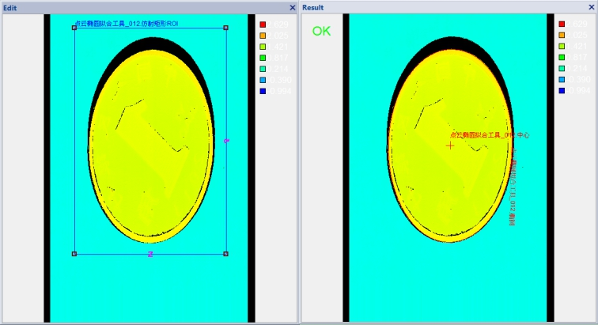
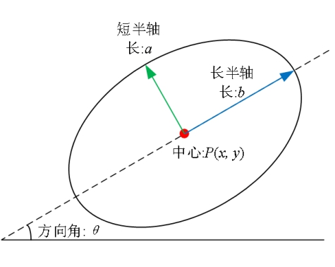

Trong đo lường 3D, công cụ fit elip đám mây điểm dùng để lấy elip fit theo hình dạng mẫu trong mặt phẳng XY, thu được các thông tin như tâm elip, độ dài trục dài, trục ngắn và góc phương hướng, nhằm hỗ trợ các thao tác tiếp theo. Hình 1 thể hiện kết quả fit elip của vùng ROI thỏa mãn giới hạn độ sâu.

| Phân loại | Tên tham số | Mô tả tham số |
|---|---|---|
| Cửa sổ thuộc tính | Bật ROI hình chữ nhật affine | Chọn “Có”, thì sử dụng vùng phát hiện ROI hình chữ nhật affine, nếu không sẽ phát hiện toàn ảnh. |
| Bật giới hạn độ sâu | Chọn “Có”, thì hiển thị tham số ngưỡng độ sâu. | |
| Ngưỡng độ sâu | Điều kiện ràng buộc độ sâu đối với dữ liệu độ sâu trong quá trình fit elip, tức là loại trừ dữ liệu độ sâu có hướng Z ngược nhỏ hơn ngưỡng độ sâu này. Ràng buộc này là ràng buộc tùy chọn, chỉ có hiệu lực khi bật giới hạn độ sâu là Có. |
|
| Cửa sổ ảnh | Ảnh độ sâu | Hiển thị ảnh độ sâu cần phát hiện, hiển thị dưới dạng ảnh giả màu. |
| Vùng phát hiện | Khi tham số bật ROI hình chữ nhật affine trong cửa sổ thuộc tính là Có, vùng ROI sẽ được hiển thị trên ảnh. | |
| Liên kết dữ liệu | Ảnh độ sâu đầu vào | Nhập ảnh độ sâu cần phát hiện. |
| Biến đổi tuyến tính 2D | Biến đổi tịnh tiến, xoay, tỷ lệ của mục tiêu so với mẫu. | |
| Giao diện nâng cao | Không | Không |
| Phân loại | Tên tham số | Mô tả tham số |
|---|---|---|
| Cửa sổ giám sát | Ảnh độ sâu đầu vào | Chiều dài, chiều rộng và kích thước pixel của ảnh đầu vào, cũng như các tham số dữ liệu độ sâu. |
| Tọa độ tâm | Tọa độ tâm của elip. |
|
| Trục dài | Độ dài trục dài của elip. | |
| Trục ngắn | Độ dài trục ngắn của elip. | |
| Tỷ lệ trục dài và trục ngắn | Tỷ lệ giữa trục ngắn và trục dài của elip fit theo vùng mẫu trong mặt phẳng XY. | |
| Phương hướng | Góc giữa trục dài của elip và trục X, trong đó dấu dương và âm của góc phương hướng lần lượt biểu thị xoay theo chiều kim đồng hồ hoặc ngược chiều kim đồng hồ. | |
| Sai số RMS | Sai số fit của elip. | |
| Kết quả thực thi | Kết quả thực thi của công cụ. | |
| Thời gian thực thi | Thời gian thực thi của công cụ. | |
| Cửa sổ ảnh | Ảnh độ sâu đầu vào | Hiển thị ảnh độ sâu đã phát hiện, hiển thị dưới dạng ảnh giả màu. |
| Elip | Hiển thị kết quả fit elip và tâm của nó. | |
| Liên kết dữ liệu | Giống các tham số trong cửa sổ giám sát, dùng cho các công cụ tiếp theo. |
Step 1 Thiết lập vùng phát hiện
Theo mặc định, fit elip đám mây điểm thực hiện fit toàn ảnh. Để nâng cao hiệu suất và độ chính xác, người dùng có thể thiết lập vùng ROI hình chữ nhật affine phù hợp.
Step 2 Thiết lập tham số tùy chọn giới hạn độ sâu
Khi cần độ chính xác fit cao hơn, người dùng có thể thiết lập ngưỡng độ sâu phù hợp theo nhu cầu để loại trừ dữ liệu gây nhiễu.
Step 3 Thực hiện fit và xuất kết quả
Sau khi thiết lập xong tham số, có thể thực hiện fit elip đám mây điểm. Kết quả đầu ra bao gồm: tọa độ tâm, độ dài trục dài và trục ngắn, góc phương hướng (như thể hiện trong Hình 2), cũng như sai số RMS.

Khuyến nghị và mô tả điều chỉnh tham số
| Số thứ tự | Tham số | Tình huống ứng dụng | Khuyến nghị và mô tả điều chỉnh |
|---|---|---|---|
| 1 | Ngưỡng độ sâu | Ảnh nền phức tạp/ngưỡng độ sâu, phát hiện mục tiêu có biên dạng gần giống hình tròn | (1) Thông qua ràng buộc độ sâu phù hợp, có thể loại trừ các điểm dữ liệu có độ sâu không đáp ứng yêu cầu, nâng cao hiệu suất và độ chính xác fit; (2) Giới hạn độ sâu không nên quá lớn, nếu không sẽ không có tác dụng ràng buộc độ sâu; |
Không
参见“\Samples\3D\深度图\3D测量工具.gvp”。